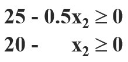
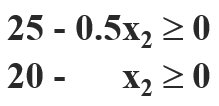

⚠ 转载请注明出处：作者：ZobinHuang，更新日期：Sept.15 2021

本作品由 ZobinHuang 采用 知识共享署名-非商业性使用-禁止演绎 4.0 国际许可协议 进行许可，在进行使用或分享前请查看权限要求。若发现侵权行为，会采取法律手段维护作者正当合法权益，谢谢配合。
1. 为什么学线性规划
1.1 什么是线性规划？
TODO
1.2 算法意义
LP 在 问题求解 的意义上非常重要，大量的问题可以被建模为 LP，并且那些无法被建模为 LP 的问题，也需要借助 LP 来进行求解。
1.3 理论意义
LP 在 问题分析 的意义上非常重要，理解和使用 对偶理论 是分析很多问题的有效方式。
1.4 与线性代数的关系
线性代数是求解满足方程约束的解，而线性规划是分析在满足约束的解中，哪个解是最好的。
2. LP 建模
要建模一个 LP 问题，有以下三个要素：
- 决策变量：`x_1, x_2, ..., x_n \in R`，矢量形式为 `x \in R^n`
- 线性约束：`\sum_{j=1}^{n}a_(ij)x_j \leq b_j` 或 `\sum_{j=1}^{n}a_(ij)x_j \geq b_j` 或 `\sum_{j=1}^{n}a_(ij)x_j = b_j`，对应的矩阵形式为 `Ax\leqb` 或 `Ax\geqb` 或 `Ax=b`
- 线性目标函数：`max \sum_{j=1}^{n}c_jx_j` 或者 `min \sum_{j=1}^{n}c_jx_j`，矢量形式即 `max cx`
3. LP 一般型：几何意义理解 LP 建模
我们定义如下形式为 LP 的一般型：
subject to `Ax \geq b`
下面让我们从几何意义的角度出发来理解 LP 的一般型，然后我们再回到代数上来看其求解方法。我们首先定义几个概念：

多面体 (polyhedron)：一个被 `{x \in R^n|Ax \geq b}` 描述的 n 维空间，其中 `A` 是一个 `m \times n` 的矩阵，`b` 是一个 m 维的向量。即在 n 维空间中由 m 个平面围起来的一个 n 维空间 (i.e. 可开放可密闭，且 `m` 和 `n` 一定满足 `m \geq n`)。
超平面 (hyperplane)：一个被 `{x \in R^n|ax=b}` 描述的 n 维空间中的一个平面，其中 `a` 是一个 n 维的向量，`b` 是一个标量。
半空间 (halfspace)：一个被 `{x \in R^n|ax \geq b}` 描述的 n 维空间中的一个开放空间，其中 `a` 是一个 n 维的向量，`b` 是一个标量。
可以发现，halfspace 是使用 hyperplane 加上方向来表现的，多个 halfspace 的交集就形成了 polyhedron。LP 一般型的 可行域 (feasible region) 就是 polyhedron。
极点 (polyhedra)：polyhedron 的边缘点，描述为 `P={x|Ax \geq b}`，如上图所示。从代数意义上看，`P={x|Ax \geq b}` 中的一个极点 `x_0` 代表了在 `Ax \geq b` 所代表的 m 个不等式中，至少有 n 个不等式在 `x_0` 处取等号。
在缺乏证明的情况下，我们默认一个结论：对于一个受 `Ax \geq b` 约束的线性规划问题来说，我们要追求的目标 `cX` 一定是在 polyhedra 的地方取到。因此，我们求解线性规划问题的方法可以先将范围缩小为求解 polyhedra 的问题，然后再寻找最优解。因此，我们有：
- 若多面体 `{x \in R^n|Ax \geq b}` 是空集，则不存在 polyhedra，则 LP 问题无解；
- 若多面体 `{x \in R^n|Ax \geq b}` 无界，则 LP 问题不一定有最优解。如下图所示的优化目标和约束条件，虽然多面体无界，但是优化目标的最优解可以在其中一个 polyhedra 上取到；如果更改优化目标为求解最大值，则最优解将为无穷，此时不存在最优解；
- 若多面体 `{x \in R^n|Ax \geq b}` 有界，则 LP 问题一定存在最优解
再次总结强调，只要存在最优解，最优解就一定在 polyhydra 上取到。
4. LP 问题求解：代数方法
通过上面的描述，我们已经发现：求解 LP 最优解的问题已经转化为以下两步：
- 找出所有的 polyhydra
- 按照一定的求解策略求解出最优解
在本小节，我们将从几何理解回到代数方法，探究基于上述思路求解 LP 问题的算法。值得注意的是，我们将不会仔细探究求解的算法，因为大多数情况下都可以把 LP 看作黑盒子，只要建模成功，用商用软件一跑就行了，很难有机会直接自己来编码实现这些算法。并且讲透这些算法所需要的篇幅远远超过了本文预期篇幅。我们最终还是会把重点回归到建模和对偶上。
下面我们将介绍 (1) 求解 LP 问题的最基本方法 以及经过了优化的 (2) 单纯形 (Simplex) 算法
4.1 求解 LP 问题的最基本方法
我们下面分析上述的两个步骤。
首先是找 polyhydra。从 polyhydra 的几何定义出发，我们在代数上可以描述为：线性规划约束 `Ax\geqb` 的 `m` 个不等式中至少有 `n` 个取等号。所以我们找 polyhedra 的思路可以很暴力：运行 `C_{m}^{n}` 次程序，每次令不同的 `n` 个不等式取等号，最终找出所有的 polyhedra。但是值得注意的是，在每次迭代中，找出来的解并不一定是落在可行域内的 (i.e. 如上第二个图所示)，因此我们还需要验证求出来的解。当这个解落在可行域内时，我们称之为 可行解 。
好了，有了基本的思路，下面我们来关心一下具体的求解过程。我们下面先给出一些概念：
基 (base)：假定 `A` 为 polyhydra `P={x|Ax\geqb}` 中的系数矩阵，`A'` 是由 `A` 的 `n` 个线性无关的行组成的 `n \times n` 矩阵，则 `A'` 是 `A` 的一个基。基 就是我们面所说的 `n` 个取等号的不等式，注意这 `n` 个不等式是线性无关的。
基本解 (basic solution)：假定令 `A'x=b'`，则该方程有唯一解，并且该解被称为 polyhydra P 对应的线性规划问题的基本解。注意！这个基本解不一定是可行的。
基本可行解 (basic feasible solution)：如果一个基本解 `x_0` 满足 `Ax_0\geqb`，即落在可行域内，则该解就被称为一个基本可行解。
总结来说，基 就是我们在每一次求解过程中关心的 `n` 个线性无关的不等式，基本解 就是这 `n` 行不等式的解，基本可行解 就是落在可行区域内的，可供我们最后求解最优解参考的基本解，对应几何意义上的 polyhedra。因此，在求解过程中的每次迭代，我们应该：
- 找出系数矩阵 `A` 的基 `A'`；
- 求 `A'x=b` 的基本解 x'；
- 验证 x' 是否是基本可行解，是的话就存起来；
- 判断是否遍历完 'A' 的所有基：若未遍历完则 Loop back to (1)；若已经遍历完则 Jump to (5)；
- 把各个基本可行解对应的优化目标值求出来，将最大的优化目标值对应的基本可行解作为最优解
[Remain Question!!] 但是，对于上面步骤的第 (1) 步：基于 LP 问题的一般形式来找系数矩阵的基是比较困难的。原因是因为我们的约束条件中充满了不等式，在代数意义上如果没有表示为相等的话，是很难利用线性代数的方法来求解的。读者可能会思考：基于我们上面的论述，我们运行 `C_{m}^{n}` 次程序，每次程序都从 `m` 个不等式中抽取出不同的 `n` 个不等式令其相等进行求解，这样子不是可行的吗？确实是可行的，这也是我们刚刚分析的思路，但是这种方法未免过于暴力，我们在后面还会介绍不那么暴力的单纯性算法。因此，我们在这里先将我们的线性规划问题从一般形式 统一为 标准形式。我们下面分析一下我们如何从一般型转化到标准型。
对于符号为 `\geq` 的一般型约束来说，我们引入一个系数为 `-1` 的 剩余变量 `x_s`，且 `s\geq0`，将不等式转化为等式。
对于符号为 `\leq` 的一般型约束来说，我们引入一个系数为 `+1` 的 松弛变量 `x_s`，且 `s\geq0`，将不等式转化为等式。
经过如此转化，由于我们向每条约束中添加了剩余/松弛变量，我们实际上拓展了线性方程组所表示的维度，如下所示。系数矩阵此时被拓展为 `m\timesn'` 且 `m \leq n'`。相应地，决策变量也由原来的 `n` 维向量变为了 `n'` 维向量。相应的，我们的优化目标 `c^Tx` 也变成了 `(c')^Tx'`，其中 `c'` 是一个 `n'` 维的向量只不过 `c'` 的 `c'_(n'-m), ..., c'_(n')` 分量全为 0，因为这部分系数所对应的决策变量是我们人工加上去的剩余/松弛变量，在一般型中并不存在。
在上面我们添加剩余/松弛变量的时候，我们强调了 `x_s \geq 0`。 实际上对于 LP 的标准型约束来说，为了方便我们后续的操作，我们通过一定的转换，可以让 `x \geq 0`， 即决策变量 `x` 的任何分量都必须大于 0。具体的转换方法如下所示：
- 若 `x_i\geq0, i\in[1,n']`，则不用做处理
- 若 `x_i\leq0, i\in[1,n']`，则使用 `-x_i` 来代替 `x_i`
- 若 `x_i, i\in[1,n']` 无约束，则使用 `x_i=x_p-x_q, x_p\geq 0, x_q \geq 0` 来代替 `x_i`
综上，经过一番转化后，下面是 LP 问题的标准形式。注意到我们下面给出的 `A`、`x`、`b`、`n` 和 `c` 等都是我们上面论证过程中的 `A'`、`x'`、`b'`、`n'` 和 `c'`，与一般型的 `A`、`x`、`b`、`n` 和 `c` 是不一样的。我们在后面中讨论的都是标准形式。
subject to `Ax = b` and `x \geq 0`
此时我们就可以着手开始解这个线性规划问题了。我们拿到手的是 `m` 个等号约束条件 `(m \leq n)`。 经过我们上面的讨论，在一个 `n` 维的向量空间中找到一个极点，需要 `n` 个 Hyperplane。 因此除了我们所拥有的 `m` 个等号约束，我们还需要 `n-m` 个其他的等号约束。 这 `n-m` 个等号约束来自于我们将 `x \geq 0` 这 `n` 个不等式中的 `n-m` 个不等式置为 0，我们就能得到 `n` 个 Hyperplane。 我们把等于 `0` 的 `n-m` 个变量叫做 非基变量 `X_N`， 把其余的 `m` 个变量叫做 基变量 `X_B`。 我们把 `X_B` 对应的系数矩阵用 基矩阵 `B` 来表示， `X_N` 对应的系数矩阵用 非基矩阵 `N` 来表示，即：
上式实际上可以被简化为，其中 `b'` 为 `b` 去掉了 `n-m` 个非基变量的 `m` 维向量：
此时如果矩阵 `B` 可逆，则我们可以得到一个基本解为：`X = (B^(-1)b, 0)`。 然后我们对 `X \geq 0` 的限制进行验证，如果验证通过，则说明 `X` 是一个基本的可行解。 如此反复，直到找到所有的基本可行解，从而求出使得优化目标最小的解 `X^\star`。
这里穿插一句：如果矩阵 `B` 不可逆，说明其行列式 `det(B)=0`，且 `B` 不为满秩，此时我们抽取出来的 n 个 hyperplane 不会相交在一个点上。
4.2 单纯形 (Simplex) 算法
在上面的基本方法中，我们通过枚举基本可行解，最终找到了最优解。对于单纯形 (Simplex) 算法来说，它的优化思路如下所示：
从可行域的一个基本可行解出发，判别它是否已是最优解，如果不是，寻找下一个基本可行解，并使目标函数得到改进，如此迭代下去，直到找到最优解或判定问题为无界为止
下面我们通过一个具体的例子来训练这种直觉。
4.2.1 靠直觉求解
举例来说，考虑如下线性规划问题：

转化为标准形式如下：
我们选取 `x_3` 和 `x_4` 作为基变量，然后我们使用其它 非基变量 来表示 基变量 和 目标函数，如下所示。这种形式被称为 关于基的典则形式。

然后基于我们上面传统方法的讨论，我们令非基变量为全 0，即可得到基本解 `x^((1))=(0, 0, 120, 50), z^((1))=0`。基本解对应的决策变量各个分量都大于 0，因此是一个基本可行解。
然而我们的思考不会止步于此，我们完全有理由相信此时的可行解还不是一个最优解，因为影响优化目标的决策变量 `x_1` 和 `x_2` 还是一个最小值，而它们越大则能使我们的优化目标更优，因此我们有理由增大它们。由于在优化目标中 `x_1` 前的系数的绝对值更大，因此我们选择在下一步增大 x_1，而增大 x_1 还需要满足以下第一张图所表示的两个约束：


由于 `x_2` 此时仍为 0，所以我们可以把约束化简为上图第二张图所示的两个约束。因此我们可以得到 `x_1=min(120/4, 50/2)=25`，故此时 `x_4` 为 0。我们把这个过程称为 `x_1` 入基，`x_4` 出基。此时新的典则方程为：
以求得第二个基本可行解 `x^((2))=(25, 0, 20, 0), z^((2))=-1250`。此时显然我们还有进步空间，因为越大对优化目标越有利的 `x_2` 此时还是非基变量且还是最小值。因此同样地，我们此时通过 `x_2` 的约束问题考虑该将谁换出基：
 

我们可以得到：`x_2=min(25/(0.5), 20/1)=20`，即此时 `x_3` 出基，`x_2` 入基。

此时我们可以求得基本可行解 `x^((3))=(15, 20, 0, 0), z^((3))=-1350`。由于初始非基变量 `x_3` 和 `x_4` 在目标函数中的系数都为正，且此时它们已经为最小值，所以已经无法继续优化，故我们拿到最优解 `z^\star=z^((3))`。
4.2.2 理论阐述单纯性算法
TODO